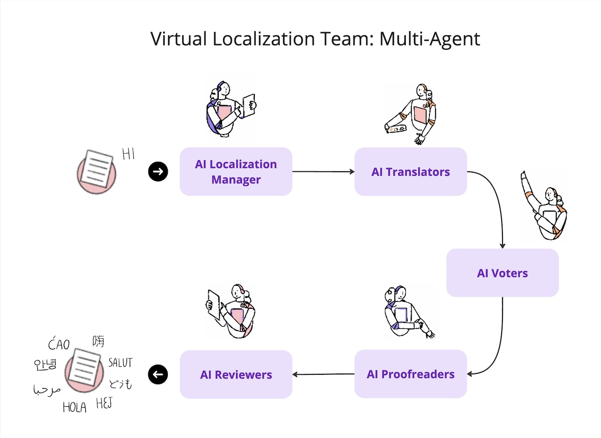

Multi-Agent Contract Translator
This project involved sophisticated multi-agent communication to produce accurately formatted translated documents. By implementing this approach, the company avoided the cost of outsourcing these services. The system incorporated nearly eight specialized agents, each with a distinct role, working collaboratively to deliver optimal results. As this is internal code, it will not be shared for security reasons.